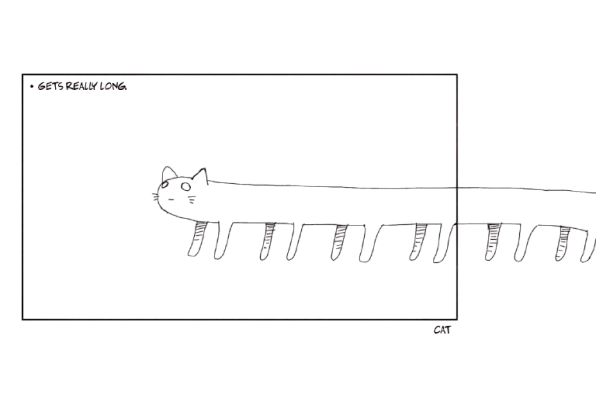

you can read the scans on mangadex in english. sadly, there is no official licensing of shimeji simulation in the west as of now. if you can read japanese, you can easily find physical volumes of the manga on ebay and etc.
it is in 4-koma format, so it may be confusing to read at first! this can easily be learned...
